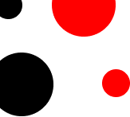
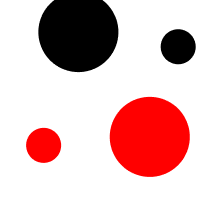
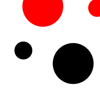

Sobre mim
Meu nome é Gabriel Girardi, sou apaixonado por tecnologia, exatas e códigos desde meus 12 anos. Em um ano pandêmico como 2020, tive um grande passo para estabelecer uma conexão entre mim e a programação, comecei meu primeiro curso de Java no Senac, com isso, fui criando interesses em novas linguagens e métodos.
Durante minha jornada, meu primeiro contato foi com o Back-End... até 2021/22, depois de começar a me correlacionar com o Front-End, entrei em um estágio para adquirir experiências, novos conhecimentos e ampliar minhas habilidades, além de ter conhecido outras pessoas incríveis com o mesmo objetivo. Atualmente tenho o foco em me tornar um Desenvolvedor Full Stack, e para isso se tornar realidade, continuarei estudando e buscando novas formas de me tornar melhor a cada dia, claro que tentando colocar tudo isso em prática para um dia ser lembrado por um grande feito. Por fim, estou cursando a faculdade de Sistemas de Informação (UNIDAVI), atualmente estou na primeira fase!